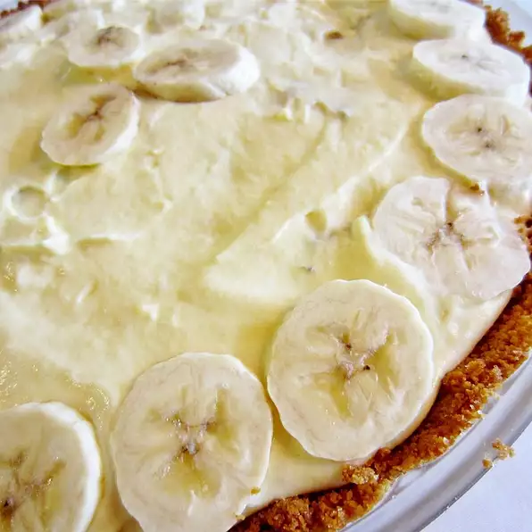

Banana Cream Pie

Description
Banana pie starting with the graham cracker curst, vanilla pudding with caramel sauce all this poured over with whipped topping. This is a easy recipe to prepare with no doubt everyone will love!
Ingredients
- 1 (9 inch) prepared graham cracker crust
- 1 large banana, sliced
- 2 cups cold milk
- 2 (3.5 ounce) packages istant vanilla pudding mix
- 1/2 teaspoon ground cinnamon
- 1 (8 ounce) container frozen whipped topping, thawed
- 1/4 cup caramel ice cream topping
Steps
- Place banana slices in bottom of pie crust
- In a large bowl, combine milk, pudding mixes and cinnamon. Beat with wire whisk for 1 minute.
- Gently stir in whipped topping to pudding, then spoon mixture into pie crust.
- Cover and refrigerate for 4 hours until pie is set up. When pie is ready serve with caramel topping.